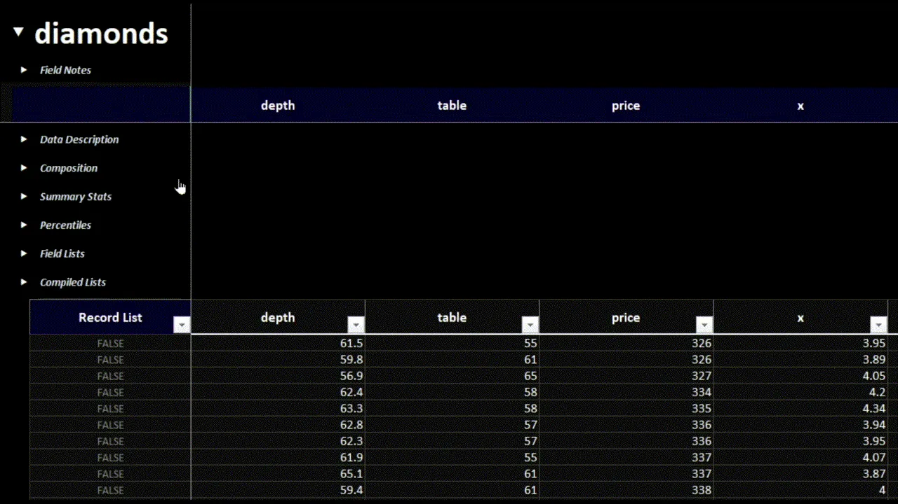
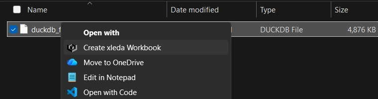
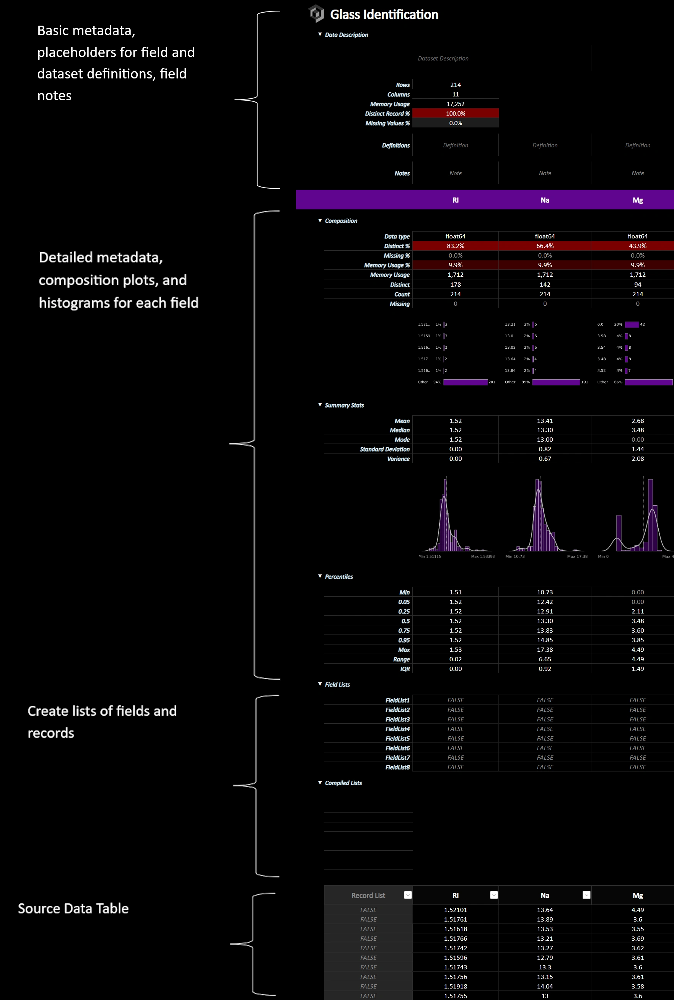
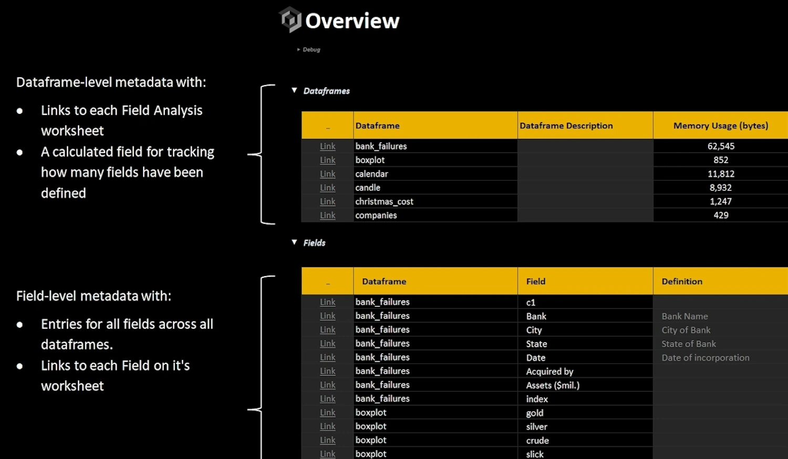
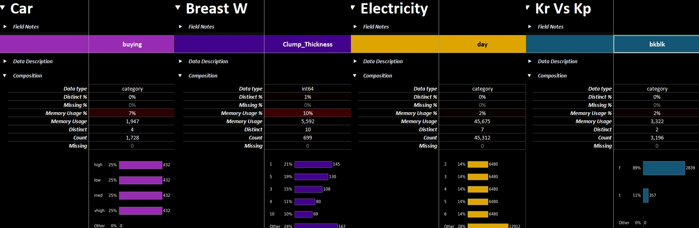
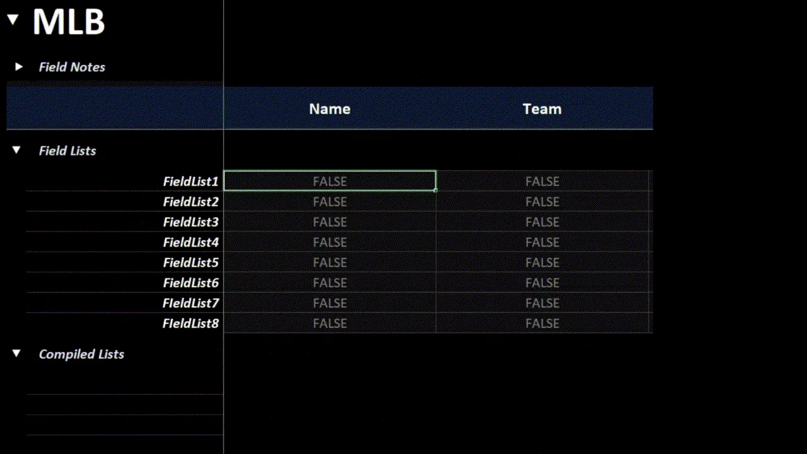
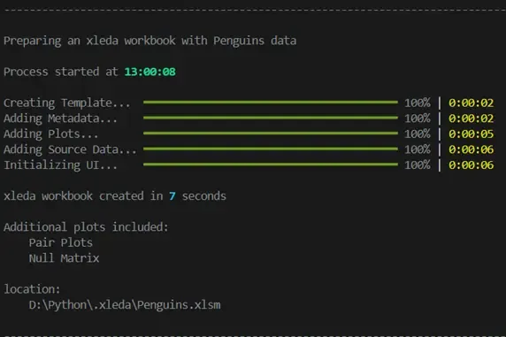
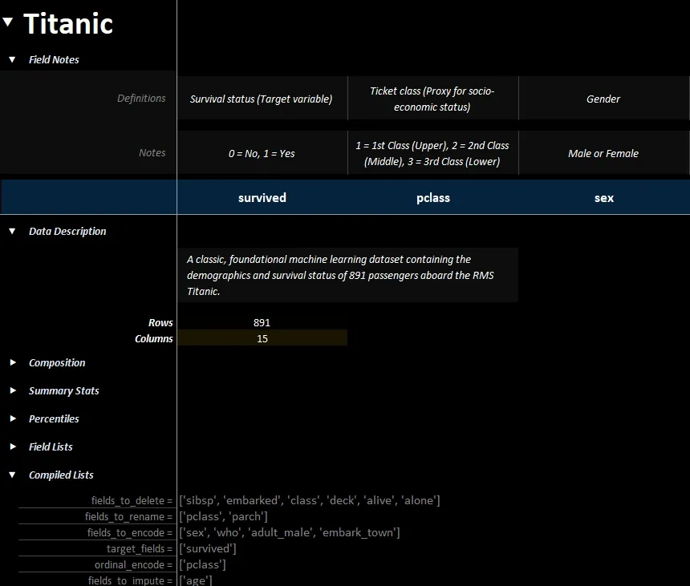
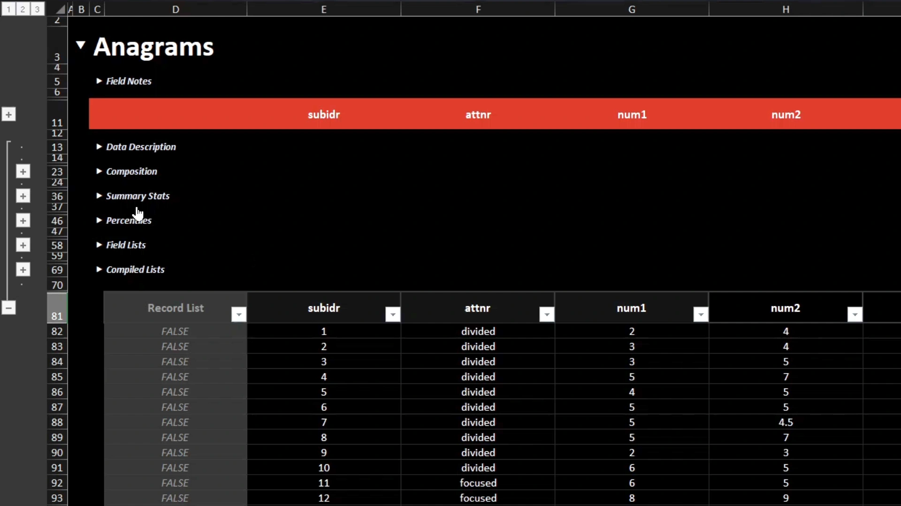

A Microsoft Excel powered EDA tool
-
Produces Microsoft Excel workbooks from dataframes or data files that are highly optimized to explore, define, and document data sets.
-
Works on both MacOS/Windows as a Python package, a CLI, or as a service that lets you create workbooks by right-clicking supported files.
-
There are some amazing EDA tools available to data professionals. You shouldn't have to start from scratch to include Microsoft Excel among them.

Top view of a Field Analysis worksheet.
Requirements/Compatibility
Desktop Excel
-
Requires the full version of Microsoft Excel (2016+) on either MacOS or Windows to create workbooks.
-
See MacOS Support section below for details on MacOS usage.
Supported Data Sources
- Supports pandas dataframes and the following file types:
- CSV, DuckDB, SQLite, Feather, Parquet, Pickle, Excel, RData, JSON, and XML.
Installation
Package/CLI
uv add xleda
or
pip install xleda
Right-Click Menu
xleda can optionally be installed into the OS such that it will create workbooks from a right-click context menu action on supported file types.
- Works on both Windows and MacOS
- After installing as a package, use
xleda installorxleda uninstallto add/remove right-click menus.
Tips: Managing the Install
###### Managing the Install * `xleda install` adds right-click functionality to your OS but it does not modify your path to make the CLI globally available.
* If the Python environment that xleda was installed into is deleted after running `xleda install`, the right-click functionality will need to be either repaired or uninstalled by running `xleda install` or `xleda uninstall` again from a new Python environment.
* If you have UV installed, you can install/uninstall the package, CLI, and right-click menus systemwide without having to maintain a venv with these one-liners.
Windows PowerShell
# Installs the package and right-click menus
uv tool install xleda; if ($?) { xleda install }
# Uninstalls the package and right-click menus
xleda uninstall; if ($?) { uv tool uninstall xleda }
# Installs the package and right-click menus
uv tool install xleda && xleda install
# Uninstalls the package and right-click menus
xleda uninstall && uv tool uninstall xleda
Quick Start
Use wb() to quickly create an xleda workbook from a dataframe or a supported data file.
From a Dataframe:
from xleda import wb
import seaborn as sns
# < your dataframe goes here >
df = sns.load_dataset("titanic")
# Creates xleda.xlsm in the current directory
wb(df)
From a File:
from xleda import wb
# < your data file goes here >
duckdb_file = Path("my_fancy_db.duckdb")
# Creates my_fancy_db.xlsm in the current directory
# Includes data from all tables in the db file
wb(duckdb_file)
From the CLI:
# Creates 'my_parquet_file.xlsm' in the current directory
xleda wb 'my_parquet_file.parquet'
From right-clicking on supported files:

xleda Components
All xleda workbooks include an Overview worksheet and a Field Analysis worksheet for each provided dataframe.
Field Analysis
- Placeholders for inputting definitions/notes
- Metadata for each field and dataframe
- Per Field Charts
- A way to create lists of fields/records
- A Source Data Table.
Anatomy of a Field Analysis Worksheet:

Field Analysis Anatomy
Overview
The Overview worksheet includes:
* A dataframe-level metadata table with links to each Field Analysis worksheet and a calculated field for tracking how many fields have definitions.
* A field-level metadata table that includes all fields from all provided dataframes in one table so that you can sort/filter fields by their name, memory usage, missing %, your notes/definitions/etc.
Anatomy of an Overview Worksheet:

Overview Worksheet with Multiple Dataframes
xleda.wb() Configuration
data | Dataframe or Path or string | Mandatory
-
Accepts any of:
- A pandas dataframe
- A dictionary of dataframes in
{dataframe_name: dataframe, ...}format - A string/pathlib Path to data file of a supported file type.
-
When providing files as arguments:
-
The workbook will default to use the same directory as the provided file and the same name.
-
Supported file types include CSV, DuckDB, SQLite, Feather, Parquet, Pickle, Excel, RData, JSON, and XML.
-
See Data File Limitations below for additional details.
-
Example: Using a dictionary of dataframes
import seaborn as sns
from xleda import wb
seaborn_datasets = ['diamonds', 'dots', 'dowjones']
dataframe_dict = {df_name: sns.load_dataset(df_name) for df_name in seaborn_datasets}
# Creates Diamonds.xlsm in the current directory
# Also includes dots and dow jones data
wb(data=dataframe_dict)
file_name | str | Optional
-
Name of the workbook to be created.
-
Defaults to:
- If a file is provided to the
dataargument, the same file name will be used. - If a dictionary of dataframes is provided to the
dataargument, the first key will be used - Otherwise,
xledawill be used
- If a file is provided to the
wb_path | Path or string | Optional
- Uses a string or Pathlib path of a directory or file
-
If a directory is provided, the workbook will be created in that directory.
-
If a file name ending in
.xlsmor.xlsxis provided:- It will either create that file or export from that file depending on whether
export=Trueis also selected. - Passing a
.xlsxfile will also setno_vba=True
- It will either create that file or export from that file depending on whether
-
Defaults to current working directory
Example: Using wb_path
from xleda import wb
from pathlib import Path
# Creates "c:\my_target_folder\Penguins.xlsm"
wb(data={"Penguins": df},
wb_path=Path(r"c:\my_target_folder"))
# Creates "c:\my_awesome_workbook.xlsx"
wb(data={"Penguins": df},
wb_path=r"c:\my_awesome_workbook.xlsx")
theme_color | str | Optional
-
Sets the primary color of the charts and the color of the headings in the workbook to a hex color of your choice.
-
This setting will persist once set. Set it to your favorite color and forget it.
-
theme_color="random"sets a random theme - Defaults to a neutral color

theme_color affects the workbooks and default charts.
plots | dict | Optional
-
Will add additional worksheets with plots of your choosing.
-
Accepts a dictionary of matplotlib Figure objects in
{'plotname': Figure, ...}format. -
No styling/sizing of additional plots is performed.
-
Setting plots to 10" wide should be a good starting place.
-
The example below adds two additional plot worksheets, one from seaborn and another from missingno. The workbook can be found here.
Example: Including additional plots
from xleda import wb
import matplotlib.pyplot as plt
import seaborn as sns
import missingno as msno
# < your dataframe goes here >
df = penguins = sns.load_dataset("penguins")
# Style the additional plots | optional
plt.style.use("dark_background")
# Create additional plots
pair_plots = sns.pairplot(df, hue="species").figure
null_matrix = msno.matrix(df).get_figure()
# Resize the null matrix | optional
null_matrix.set_size_inches(9.35, 4.5)
# Creates Penguins.xlsm with two extra plot sheets
wb(data={"Penguins": df},
theme_color="#4C4C4C",
plots={'Pair Plots': pair_plots,
'Null Matrix': null_matrix})
overwrite | bool | Optional
-
Whether to overwrite existing workbooks of the same name.
-
Existing workbooks are sent to Trash/Recycle Bin
-
Defaults to
False
large_report | bool | Optional
-
Raises the default dataframe size limits of 25,000 rows/50 columns to Excel's limits of 1,000,000 rows and 16,000 columns.
-
The closer your are to this limit, the more RAM and patience you'll need to produce a workbook.
-
See additional details in the performance section below.
-
Defaults to
False
no_vba | bool | Optional
-
Creates the workbook as a
.xlsxfile without VBA. -
This setting will persist once set. If you don't want VBA workbooks, use this flag then forget it.
-
An alternative to using this option is to provide a file name ending in
.xlsxforwb_paththough this setting will not persist. -
See the VBA Code section below for additional details.
-
Defaults to
False
Example: Creating workbooks without VBA
from xleda import wb
import seaborn as sns
df = sns.load_dataset('penguins')
# Creates "Penguins.xlsx" in the current directory
wb(data={"Penguins": df},
no_vba=True)
# Also creates "Penguins.xlsx" in the current directory
wb(data=df,
wb_path="Penguins.xlsx")
open_wb | bool | Optional
-
Opens the workbook after creating.
-
Setting this to
Falseis useful when creating multiple workbooks -
Defaults to
True.
export | bool | Optional
-
Performs an export from an xleda workbook instead of creating one.
-
See Exporting Metadata to Python section below for examples/additional details.
-
Defaults to
False.
Usage Notes
Creating Field or Record Lists
## Creating Field or Record Lists The `Field Lists` section includes placeholders for 8 field lists. * Anything not marked as `False` will be included in each list. * You can rename any list to `Anything You Want` and the list will be renamed to `anything_you_want`. * The `Record List` field added to your source data works the same way except it creates a list of records instead of a list of fields. * The Compiled Lists section formats your lists as python lists.

Easily create lists of fields in your data.
Limits with Large Data Sets
## Limits with Large Data Sets To ensure workbooks are created quickly, defaults limit data to the first 50 columns and a random sample of 25,000 records. * You can optionally override this to Excel's limits by using `large_report=True`. * You'll see a warning banner if you hit a limit.

Data File Limitations
## Data File Limitations When provided data files instead of dataframes, xleda will attempt to create a workbook that includes dataframes for all tabular objects within the data file. e.g. All tables in database files, all tables from Excel files, or all dataframes in RData/Pickle files. This functionality comes with some important limitations. * Not all files will parse successfully. * e.g. Deeply nested JSON/XML, a CSV file with tabs instead of commas, `.db` files that are neither SQLite or DuckDB files, or DuckDB files with a `.txt` extension. * Not all objects within a file can be represented by a dataframe. * e.g. R Functions from an RData file, matplotlib Figures from a pickle file, or anything in an Excel file that isn't a proper Excel Table. * Data types may not always translate well into Excel. * e.g. xml fields will arrive into Excel as strings, or dates from an sqlite file may or may not appear as dates in Excel. * If the provided data file doesn't parse correctly, try creating a dataframe first and use that with xleda instead of the file.
Performance
## Performance On an average machine, xleda creates workbooks for most data sets less than 20 seconds on Windows/1-2 minutes on MacOS * Performance is largely dependent on how powerful of a machine you have and how many/how large/how complex your dataframes are. * There is a detailed output provided when creating a workbook that does a pretty good job of letting you know what it's doing. * This information is also added to the `debug` section of the `Overview` worksheet

Console output of from creating an xleda workbook
Columns Added to Source Data
## Columns Added to Source Data There are some columns added to the Source Data table to support an EDA workflow. * `HasBlank`: If any field in a record has a missing value, this will show 1 otherwise 0 * `Record Hash`: Uses a built-in pandas feature [hash_pandas_object](https://pandas.pydata.org/docs/reference/api/pandas.util.hash_pandas_object.html) to uniquely identify records. If two records share all column values they also share a `Record Hash`. * `Record List`: Used to tag individual records. Like `Field Lists` above, anything not marked false gets added to 'Record List'.
Exporting Metadata to Python
## Exporting Metadata to Python ##### **Default Metadata** Metadata from all `xleda.wb()` objects is collected into a list of dictionary objects, one for each dataframe, accessible through `xleda.wb().export_dicts`
* The following metadata is available without using `export=True` * `field_metadata`: A basic metadata dataframe, combining information from pandas info/describe/quantile. * `field_overview`: Field-level metadata as seen in the field section of the **Overview** worksheet. * `df_overview`: Dataframe level metadata as seen in the dataframe section of the **Overview** worksheet. * `source_data`: A copy of the source data that also includes `Record Hash`/`Record List`/`HasBlank`/`index` columns.
Example: Accesssing basic metadata
# Creates "Titanic.xlsm" and exports default metadata
export_dicts = wb(data={"Titanic", df}).export_dicts
# Returns ['field_metadata', 'field_overview', 'df_overview', 'source_data']
export_dicts[0].keys()
##### **Expanded Metadata** Using `xleda.wb(export=True)` reads the xleda workbook it would have created instead of creating it.
* Includes the default metadata described above but they are instead sourced from the workbook and will reflect any changes you've made in Excel. * Also includes the following for each provided dataframe: * `description`: Dataframe description if you've added one * `definitions`: Any field definitions you've added. * `notes`: Any field notes you've added * `lists`: Any lists showing in the compiled lists section ** *Note that data types will likely change in the round-trip translation.*
Example: Exporting from a completed workbook
* The xleda workbook pictured here is used in for the export code example below . * It can be found [here.](https://github.com/InfoDesigner/xleda/raw/refs/heads/main/examples/Titanic%20Completed.xlsm).

A completed xleda workbook showing definitions, notes, lists, etc.
from xleda import wb
# Performs a full export from "Titanic Completed.xlsm"
export_dicts = wb(data={"Titanic Completed", df},
export=True).export_dicts
# Returns ['description', 'definitions', 'notes', 'lists', 'field_metadata', 'field_overview', 'df_overview', 'source_data']
print(export_dicts[0].keys())
MacOS Support
## MacOS Support xleda will create the same workbooks in MacOS though creating them is signficantly slower and you may get two different types of prompts that require your attention. Look for the bouncing Excel icon.
| To Access Files | To Enable Macros | |
|---|---|---|
| Source | MacOS | Excel |
| Details | Prompts to Allow Excel to access the file it's creating. If you get these prompts, you'll potentially get one for each unique file you create. |
Prompts to "Enable Macros". If you get these prompts, you'll get two when creating a workbook: 1. When opening the blank template 2. When opening your created workbook. |
| Example |  |
 |
| Remedy | There's not a reliable remedy to this. MacOS doesn't permit applications like Microsoft Excel real access to the file system, even after explicitly granting Excel Full Disk Access under Settings > Privacy & Security > Full Disk Access. |
You can either: 1. Create a VBA free workbook (see the next section for details). 2. Change Excel's default macro settings (shown) to one of the other two options.  |
VBA Code
## VBA Code The included [VBA code](https://github.com/InfoDesigner/xleda/blob/main/src/xleda/vba.bas) is fairly short and easy to understand. You can create a VBA-free, xlsx workbook by either setting `no_vba=True` or providing a `wb_path` ending in `.xlsx`. Using `no_vba` will change the default so that once you set it, that setting remains until it's changed. Using `wb_path` doesn't work this way.
#### What it does 1. Makes the sections expand/collapse when you select them as pictured on the left which can also be performed by using row groupings as pictured on the right.
2. Adds a PythonList UDF that format cell values as Python lists.
#### The Annoyance Cost Besides Enable Macros prompts using VBA also includes one annoying side effect. Every time a macro is used, it clears your undo history. The PythonList UDF is immune to this but expanding/collapsing headings is not.
|
Use headings like web pages to navigate with VBA. |
 Use row groupings to navigate without VBA. |
Troubleshooting
## Troubleshooting
xleda is slow
* Try reducing the amount of data you're sending to it, and let it finish. * After production, refer to the debug section of the `Overview` worksheet for how the time to produce your workbook is being spent. * Note that on MacOS, `xleda` is much slower by default and the timings in the debug section may be inflated from missed permission prompts during production.If you receive the "Error: The workbook cannot be overwritten while open!" and don't see any open workbooks:
* You may have a hidden Excel instance that needs to be closed. * Guidance on closing hidden Excel windows for [MacOS](https://www.google.com/search?q=hidden+excel+instance+in+macos)/[Windows](https://www.google.com/search?q=hidden+excel+instance+in+windows)If you receive the "Exception: Could not activate App!" or "The RPC server is unavailable". errors:
* The Excel app may have crashed or is otherwise disconnected from Python. * Close all Excel windows and try running the command again.If you can't get xleda to run at all and are using Windows/MacOS with a full Office Installation:
* Try getting the following script to run using xlwings (not xlwings-lite). * All it does is open Excel and create a new workbook. * You should be able to `pip install xlwings` and run the script successfully. * If that doesn't work, see their [installation instructions](https://docs.xlwings.org/en/latest/installation.html) for details on how to get it set up. * Be aware that xlwings has a ton of functionality and that for xleda to work, it only requires communication with Excel and not the addin, xlwings lite, udfs, or many of the other things xlwings can potentially do. * If you can get the script below to run successfully, xleda has a good chance of working reliably. * If you can't get it to work and you're on Windows, [this may help](https://www.google.com/search?q=win32+com+corruption+xlwings).import xlwings as xw
app = xw.App()
Changelog
Version 0.8.185 New simplified API, simplified export, general polish
**Simplified basic usage to make it quicker to use and easier to memorize.** * Changed the default entry point to `xleda.wb()` from `xleda.FieldAnalysis()`. * `xleda.wb()` now creates and automatically opens workbooks. * The only argument needed to create a workbook is now a dataframe. `wb(df)` * Workbook name now defaults to `xleda` if no name is given. * Protected backwards compatibility while providing guidance to use the new API. * Subclassed the new API to create plugs for the old one.
**Simplified export functionality** * Changed `export_analysis` functionality from a class method to a class argument `wb(df, export=True)`. * All wb() objects now include a export_dict metadata collection that is accessible using dot notation. * Added field_metadata, and overview_metadata to export_dict. * using wb(export=True) reads a workbook instead of creating one and adds the metadata from the workbooks to export_dict. * Added file exists checks for `export=True` with messaging that the export will be limited if the file isn't found.
**Template updates** * Recreated the template, moved formatting to cell styles for simplicity/consistency in maintenance where appropriate. * Pivot was removed and Blanks was renamed Pivot. * `% of Records` field was added to the new Pivot * Added dataframe index to source data by default. * Added dataframe level metadata to the Data Description section. * Added two UDFs to the template, PythonList/PythonDict to create Python formatted strings from cell values * Adjusted the named range to support being able to delete almost any column without affecting lists or navigation. * General polish.
**Other updates** * Default limits were reduced to 25,000 rows/50 columns * Good deal of refactoring to support new entry point, minimize errors, reduce redundancy. * Removed clipboard usage in all except one place which is formatting instead of data. * Added `open_wb` argument to prevent automatically opening the workbook. Useful if creating many workbooks. * Replaced rich progress bars with TQDM for better support in notebooks/vs code notebook/console environments. * When using overwrite=True, overwritten files now go to the recycle bin/trash. Console output includes messaging about these files. * Clarified/organized readme to support the new API/template. * Added production logging metrics so you can see how the time required to create a workbook was utilized. * This is useful if you're trying to find a good size to subsample to. * You can find it at `wb().performance` for now.
Version 0.8.186: Add multiple dataframes, module refactoring into classes, add logging
**Implemented `add_dfs`** * Adds Field Analysis/Overview reports for each additional dataframe. * Pivot is only provided for primary dataframe. * Useful for supporting or related data. * Worksheet names now include the dataframe name. * Each dataframe's worksheet set gets a greyscale gradient so they can be visually distinguished among worksheet tabs.
**Export adjustments** * Implemented an ExportDict class to add structure to export functionalities * To support the additional dataframes from `add_dfs` functionality, `export_dict` has been renamed to `export_dicts` and now provides a list of ExportDict objects, one for each provided dataframe. * ExportDict allows access to metadata through both dot notation and `dict[key]`. * Reinforced handling of modified export workbook. * If a workbook is found but that the expected worksheets aren't found, i.e. they've been deleted or renamed, it will export what it can and return a list of what wasn't found.
**Reinforced `wb_path`/`name` handling** * `wb_path` now accepts strings, or pathlib Path objects. * Also accepts full/partial paths with/without correct extensions * Providing a path ending in `xlsx` or `.xlsm` will set `no_vba` to `True`/`False` respectively * Illegal characters are now properly stripped from provided names before using in file/object names
**Added production logging/debug worksheet** * The `debug` worksheet details how the time it took to produce the workbook was allocated on both field and workbook levels. * Also includes configuration and system details
**Other Updates** * Tests, examples, readme updated to reflect new functionality * In the template, the `Field Notes` section of the `Field Analysis`worksheet was merged into `Data Description` section. * Refactored the primary module into more specialized classes. * Configuration/environment/plotting/logging/theme all have their own classes * Also implemented new Blueprint class * Workbooks are now constructed from config object that includes a list of Blueprints * Each provided dataframe gets it's own Blueprint * Improved handling of datatypes that are unsupported in Excel/xlwings such as TimeDelta * Reinforced system configuration checks with more informative offramps for: * Unsupported system configurations * Situations where necessary template components have been removed/renamed. * Adjusted Github Action script to remove all but last changelog and convert the details/summary to standard markdown.
Version 0.8.193: Added MacOS support
**Added MacOS support** * Used xlwings when possible, appscript/AppleScript/subprocess otherwise * Reduced OS branching when possible * Documentation/test/tools/examples updated to be cross platform. **Other Updates** * Removed field logging from logging/template * Simplified some of the pivot configuration where possible. * Added multi-threading for the progress bar which keeps the time elapsed ticking during longer iterations. **Template Adjustments** * Moved the xlsx conversion to a pre-commit hook instead of an on-demand end-user task. * Adjusted expand/collapse icons to use a more reliable cross-platform character * Removed navigation shapes from the xlsx template.
Version 0.8.197: Readme/pyproject.toml polish/minor fixes
* Moved code examples/troubleshooting/usage notes into details/summary blocks to reduce clutter in README. * Fixed a cross-platform formatting issue with the debug worksheet * Updated a few older screenshots to use the current template. * Adjusted "type: ignore" lines where possible * Organized pyproject.toml, added "required-environments" section
Version 0.8.202: Fixed matplotlib headless backend implementation
* Changed the plotting implementation to only use a headless backend while producing plots.
Version 0.9.001: Added data file support, added a CLI, added right-click context menu for Mac/Windows, simplified API, signifantly improved experience with multiple dataframes
**Expanded Input Options** * Added a way to use dataframe dictionaries and data files as sources. * A file that represents a tabular object, such as parquet/csv files will create a dataframe then create a workbook from that dataframe * Complex files, such as duckdb, RData, or sqlite files will create dataframes from all tabular objects within each file and create workbooks with those dataframes. **Expanded Ways to Use** * Added a **CLI** interface which replicates most of the Python API * Includes structured help and is consisent with the Python API in almost every way. * CLI also includes 'install/uninstall' commands which installs right-click on supported files functionality on MacOS/Windows. **Simplified API** * Changed the `input_df` argument to `data` and opened it up to accept dataframes, dictionaries of dataframes, and data files. * Enabled support for csv, feather, parquet, excel, duckdb, sqlite, rdata, xml, json, and pickle files. * `created an `input_df` placeholder API for backwards compatibility. * Changed the 'add_plots' argument to 'plots'. **Significanly overhauled the experience when using multiple dataframes** * Converted the **Overview** worksheet a to a landing page which: * Includes a dataframe-level table * Includes a field-level table that collates metadata from all field across all dataframes in one table. * Has links to each dataframe's worksheet and each worksheet includes links back to the **Overview** * Has links to each field within it's worksheet * Tracks how many of the fields are defined. **Other Updates** * Simplified/updated documentation where possible/necessary * Removed the pivot worksheet/functionality * Corrected the matplotlib headless backend again * Amended the PythonList UDF to also accept arrays which lets it create Python lists using results from other Excel functions that return arrays like Filter, SumProduct, etc. * Removed the PythonDict UDF